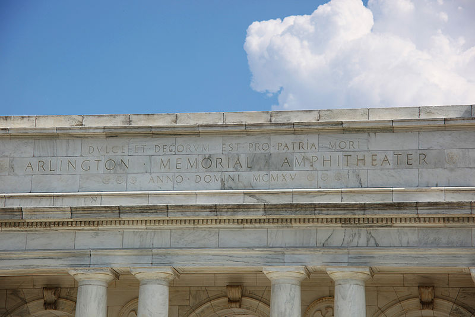

Why I donate to Arts Emergency
by David JonesThe horror we face, of war, poverty, genocide, displacement. The struggle.

In this crisis of despair, how do we cope?
The arts and humanities are how we appreciate what it is to be human.
They are how we recognise the humanity in each other, and ultimately, in ourselves. Violence against one, is violence against all.
The clue is in the name, humanities.
In poetry and dance and stories, and a thousand other ways, we inspire, aspire, dream, and hope.
It is not the job of The Arts to document, a simple automaton can do that. It's the job of The Arts to take what is there, and show what is not.
That's why I help fund Arts Emergency.